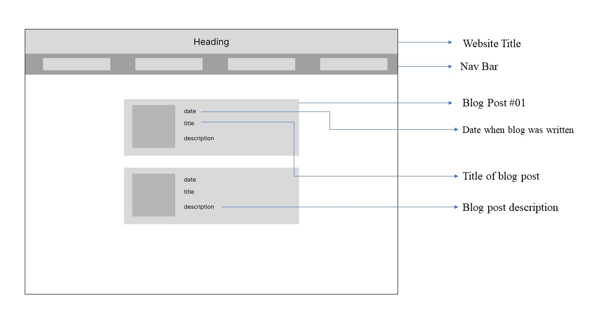

The following section comprises of my designs and some of my thoughts when creating this website.
The first iteration without research.
The second iteration after looking at blog websites.
I tried a different approach here.
The last wireframe that I played around with before building my website.
I spent a lot of time trying to implement each wireframe instead of using it as a reference. I do think that wireframing is something that I need to improve on. I selected the one that I felt consistently drew focus to the purpose of the website. With many of the other wireframes, I had several pictures that became a bit overwhelming to deal with and took away from the blogs.
A website that gives users the impression of an interactive journal.
Throughout this block, I have learnt several different accessibility scenarios. I chose very natural colours like black, white, beige, and grey. I tried to research more about colour vision deficiency but, I resorted to staying more to natural colours. However, I would like to implement more colours into my website and try and have settings to apply filters for people who live with different types of colour vision deficiency. I did not want to make too many assumptions before I had done all the necessary research and ultimately do more harm than good.
I have used Times New Roman throughout my website. It reads easily and also gives off this classic writing style impression. There were other font choices such as Arial Narrow, etc. but I chose against this due to readability.
For the homepage, the wall is supposed to act as a signboard. And the icons on the corner of the buttons act as drawing pins or thumbtacks.
For the other pages, the paper background makes it seem like a journal entry. It is also subtle and consistent, so there is nothing that is popping out of the screen or drawing unnecessary attention.
The overall goal is to create a website that allows the user to easily navigate through. To achieve this, I would need to ensure that every interactive element is clearly displayed on the website, there is a clear loop where users can get to and from wherever they need to, and the website communicates to the user where they are on the website. I have decided to use a navigation bar to ensure this communication.
The flowchart is a very basic illustration on how a user can navigate through my website. It shows the continous loop between pages but also shows that the user can only veiw the blog posts by clicking on the blog section. From the blog section, the user has the option to navigate to any other page of the website.
The overall goal is to create a website that allows the user to easily navigate through. To achieve this, I would need to ensure that every interactive element is clearly displayed on the website, there is a clear loop where users can get to and from wherever they need to, and the website communicates to the user where they are on the website. I have decided to use a navigation bar to ensure this communication.
I built my blog page similarly to the link above. I liked the idea of displaying the blog posts chronologically and with a short description expressing what the user is about to read. I initially had a grid with all my blog posts, but when asking people to navigate through my website, there were quite a few misunderstandings where users read certain aspects in the wrong order. For the future though, I do think I can incorporate certain filtering buttons that allow people to view the website in different ways.
Final Homepage Wireframe
Final Blog Page Wireframe
Final Blog Post Page Wireframe
Final Portfolio Wireframe
Classes and IDs made the implementation process quicker and helped me to be more efficient. The classes allowed me to standardise different aspects and IDS allowed me to make small changes for images and text that differed slightly.
I did have a small issue implementing images. The images would not load, and my alternative text would be displayed. I fixed this by placing different icons, wireframes, and images in different folders. This was a very weird instance but hopefully, I can find a more efficient and fool proof method at a later stage.